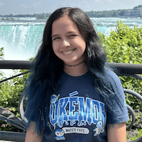

About Me

Hi, I’m Arwen! I’m a graduate student at the University of Florida, pursuing a Master’s in Web Design and Online Communication. I earned my Bachelor’s in Computer Science from UF in May 2025. My passions include music, the ocean, Pokémon, and cats! I love to play Pokémon Go, play Switch games, go to theme parks, and spend time with my 3 cats, Stormy, Phantom, and Twix.
I’m apart of the UF Pokémon Go Players club, and I serve as their Niantic Community Ambassador! I was also their Social Media Manager during my time in undergrad. I play events weekly with them, and love big yearly events like Go Fest and Go Tour. I also love going to their in-person events, like Go Fest in NYC and Go Tour in LA. I’m going to my second in-person Go Tour LA event at the end of February 2026! My favorite Pokémon is Vaporeon, and the best Pokémon in my account is probably my shiny Maushold that’s a family of 3, which is very rare to get.
I have a strong love for EDM music, and my favorite artists are Rezz and Deadmau5. I love attending EDM festivals and even creating my own music. I sing and play piano, and I played clarinet in marching band. I was apart of the Gator Marching Band my first two years of undergrad, and the UF Choir all four years!